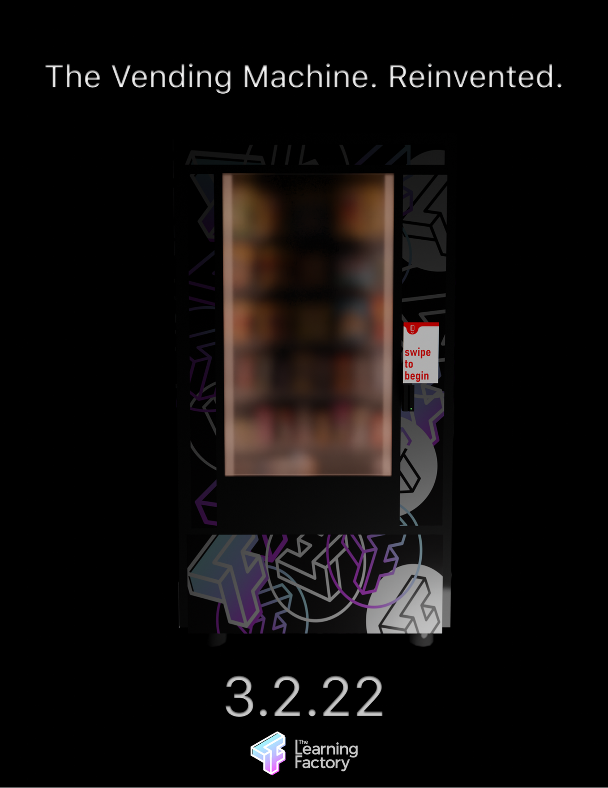
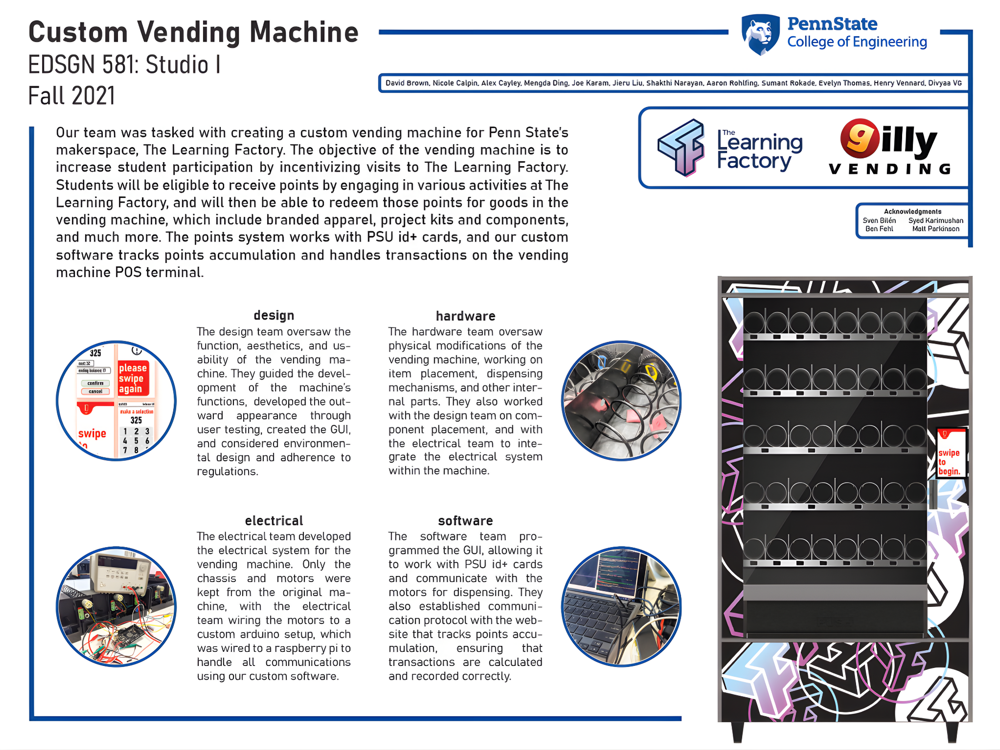
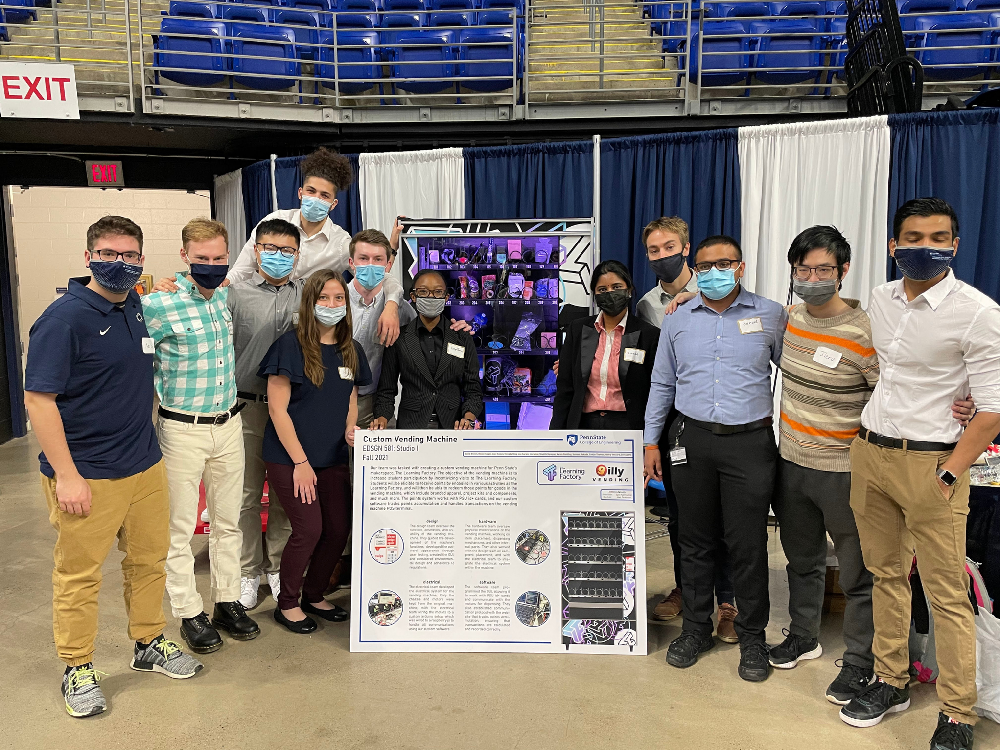
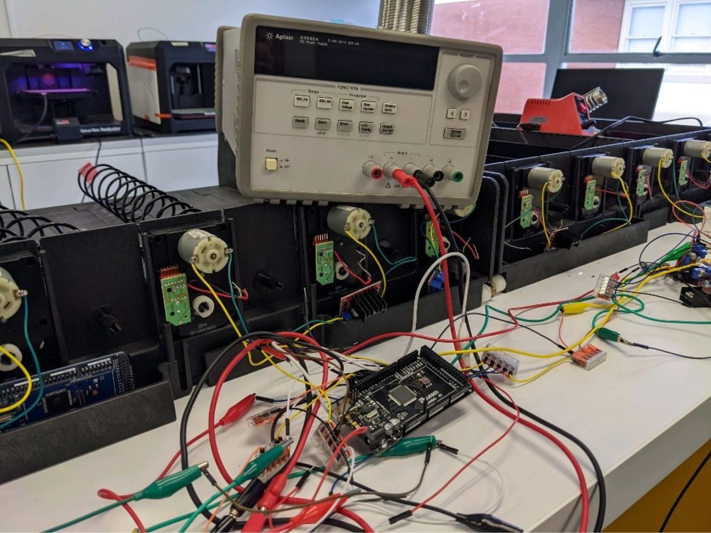
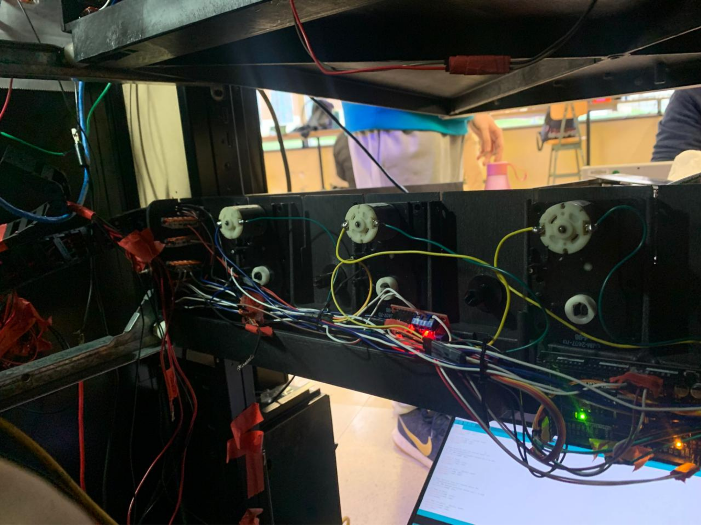
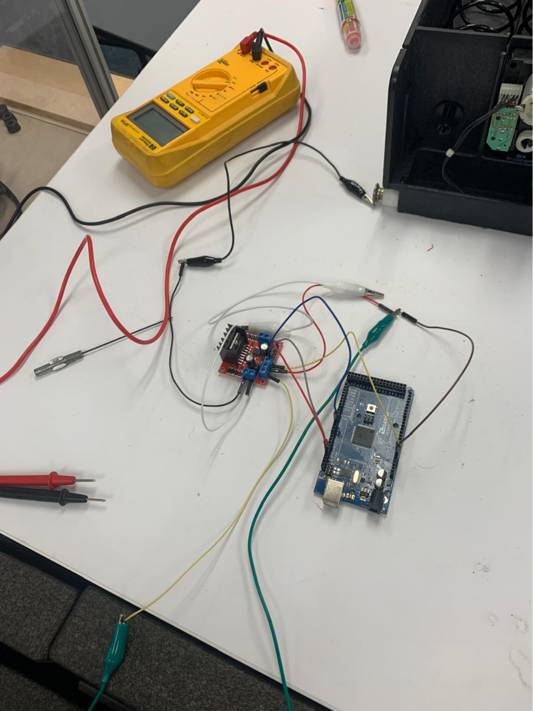
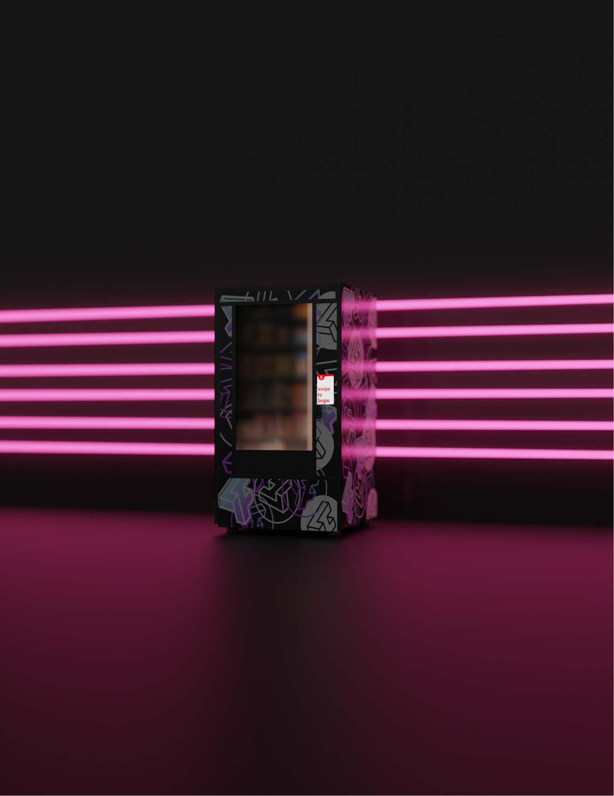
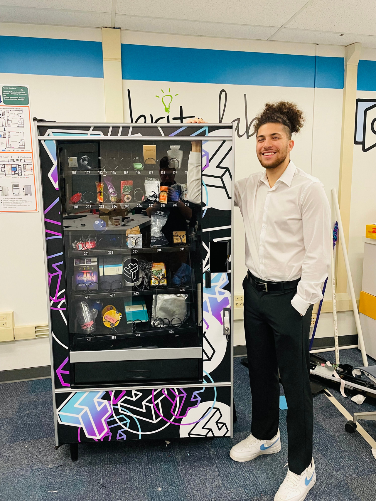
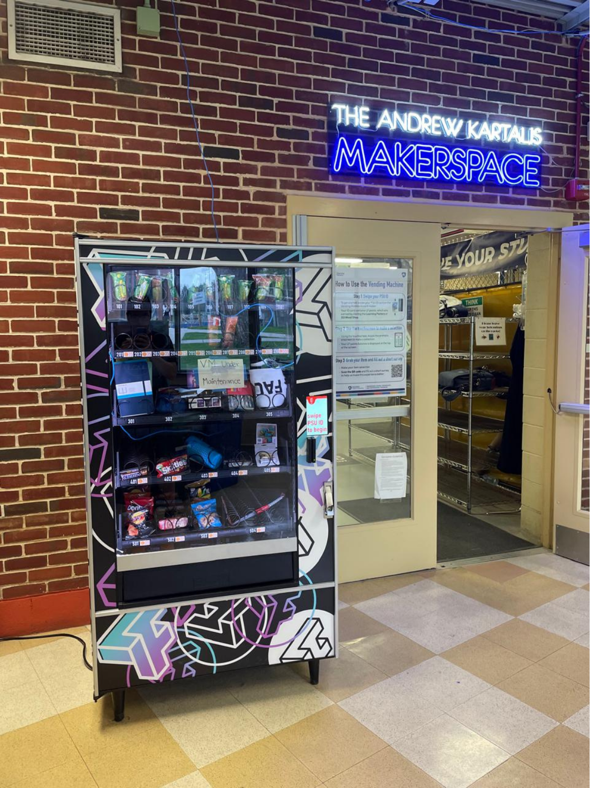

Timeline: August 2021 – May 2022
Institution: The Learning Factory, The Pennsylvania State University
Vending machines have existed since the 1800s, evolving to become more interactive and
accessible.
For this project, our goal was to reimagine the vending machine experience, creating one
tailored for the Learning Factory, Penn State’s engineering prototyping lab.
The concept introduced a new monetary system (LF Points) that replaced cash, where students
could “purchase” course-related items like Arduinos or sensors using credits earned from time
spent working in the shop.
In essence, it was a vending machine that rewarded effort and participation, turning lab time
into tangible value.
We wanted to make an ordinary vending machine smarter, more flexible, and human-centered, while
ensuring:
- A reliable, scalable control system for mechanical operations.
- An intuitive, student-friendly interface.
- Integration of custom electronics and communication protocols.
This meant transforming an outdated mechanical system into a connected, programmable, and
interactive one.

Our team divided into three main groups:
- UI/UX Design: interface design, user journey, and screen interaction.
- Hardware: mechanical integration, enclosure modifications, and structure.
- Software/Electrical: programming, wiring, and system logic.
I led the Software/Electrical team, overseeing all technical aspects of control, wiring, and
programming, while also contributing to UI testing and hardware prototyping.

We began by purchasing an old vending machine and completely stripping it down to its mechanical
frame.
Only the motors, chassis, and dispensing hardware were retained; everything else, from the logic
boards to wiring harnesses, was redesigned from scratch.
The new architecture was built around:
- Motor Drivers (H-Bridge) for direction and torque control.
- Microcontrollers (Arduino) to handle motor logic and user inputs.
- Microprocessor (Raspberry Pi) as the main system brain, managing data flow and
interface.
Communication between components was achieved through I²C, enabling efficient and synchronized
control of all subsystems.
We also built a custom interface that allowed students to browse, select, and redeem items using
their earned points.



While my primary role was in electronics and programming, I also contributed to UX research and
testing, collaborating closely with the design team.
Together, we conducted:
- User interviews and surveys with engineering students.
- Prototype testing sessions to refine screen layout and user flow.
- Accessibility and clarity studies to ensure quick, frustration-free operation.
The result was a vending experience that was both technically robust and emotionally engaging,
rewarding students for their work in a tangible, interactive way.

I also assisted the hardware team by 3D printing and fabricating replacement parts, such as
custom brackets, mounts, and housings for sensors and control boards.
These rapid prototypes accelerated assembly and reduced dependency on external components,
keeping the build agile and cost-effective.

The completed vending machine was fully functional and deployed at the Penn State Learning
Factory, where it became a central interactive feature in the engineering lab.
The project was later featured on the official Penn State College of Engineering YouTube
channel, highlighting it as an example of innovation, collaboration, and applied human-centered
design.


Problem: Conventional vending machines lacked relevance and engagement for an academic
environment.
Method: Re-engineered an existing system using microcontrollers, sensors, and human-centered UX
design principles.
Result: A fully functional, reward-based vending machine integrating engineering, design, and
education into one interactive product.
Credits: Developed at The Learning Factory – Penn State, with multidisciplinary collaboration across UI/UX, hardware, and electrical/software systems.